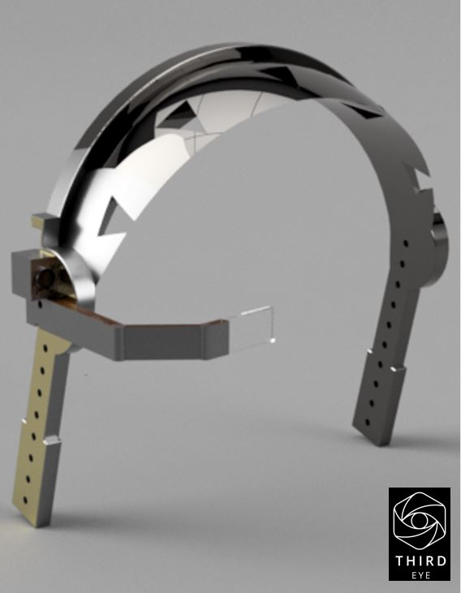
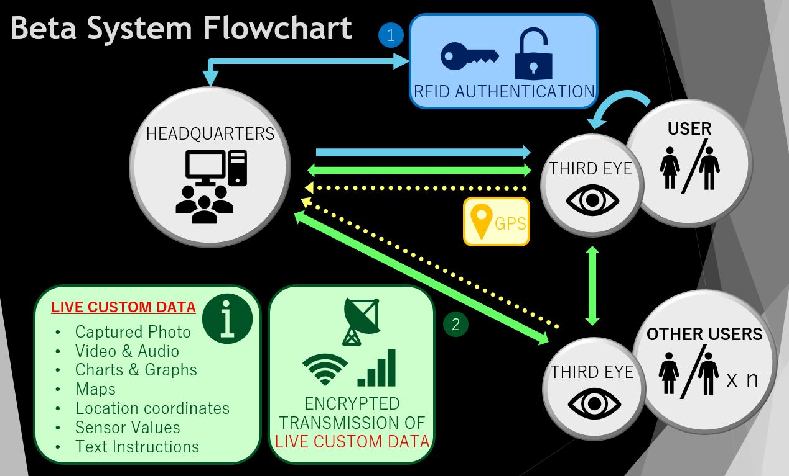
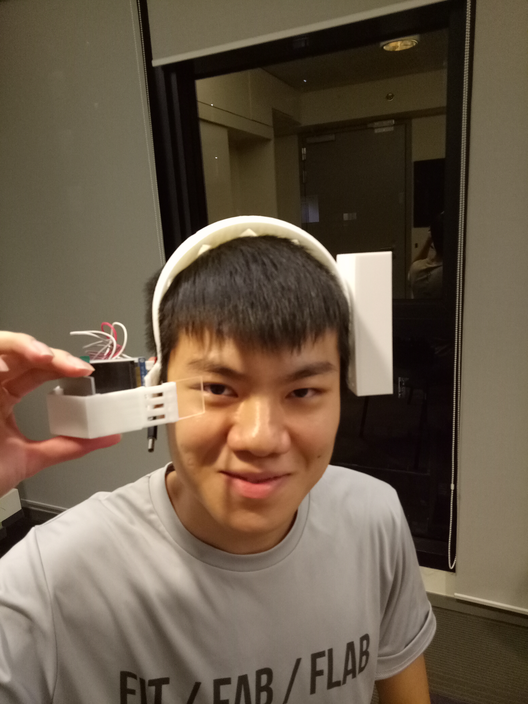
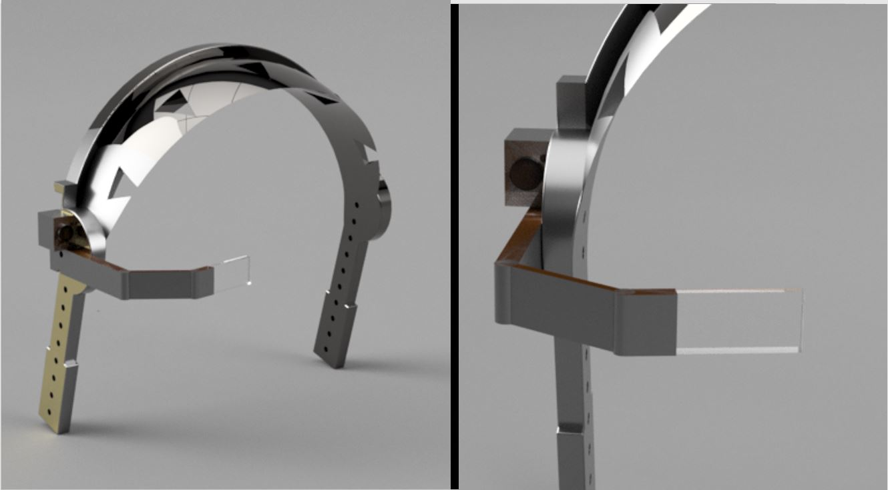

3D Printing | Transparent Display | Audiovisuals + GPS
This international tournament consisted of a few rounds, starting from the intra-school stage, moving on to the nationals and finally the international level. Team KIASU (Toh Wei Qi, You Song Shan, Phan Nguyen Vinh), managed to represent Singapore on the international stage.
My strategy for this tournament was simple, Thales splits its business into 5 different sectors, Aerospace, Space, Defense and Security, Engineering and Transportation and we wanted to come up with a product that could be effective in all its business sectors. This took the form a transparent display headset that allows for audiovisual communication and data feeds between a command centre and the operator, and also between operators.
The team allocated 3 days to this project.
Relevant information that can assist operators are fed through speakers and the transparent lens, while the operators communicates what he sees and hears through a camera, mic and GPS.
For the design phase, I took inspiration from the Google Glass, but instead of only thinking about serving individual users, I wanted to focus on the network in which the Third Eye functioned in. Thought was put into identifying the specific roles and contexts where the Third Eye truly benefits its users with the hands-free advantage.
3D printing was used to print the body of the headset and the container for electronics and optical system.
Always watch the start of your 3D Print, or pay the price
The optical set-up was done with basic lens and mirror physics. I was elated to finally apply these concepts in real life.
I apologize for poor cinematography
Demo for the camera functions which the operator will use to choose when to transmit images or video feed to their network (Wei Qi).
Demo for the RFID system which will authenticate users of the Third Eye - it is dangerous if the headset if used by external parties (Vinh).
Final, fully integrated prototype, a little on the chonky side, but packs a camera, GPS sensor, RFID reader, bluetooth transmitter and receiver. Aside from a mirror, lens and batteries.
Song Shan, modelling for the Third Eye.
For this project, I came up with the concept and design, prepared the sensors required, and handled the 3D printing and renders for publicity. I also supported each member with the development of the code for each component. Lastly, I integrated all the different Arduino scripts and components together and installed the wiring and power required to run the Third Eye.
